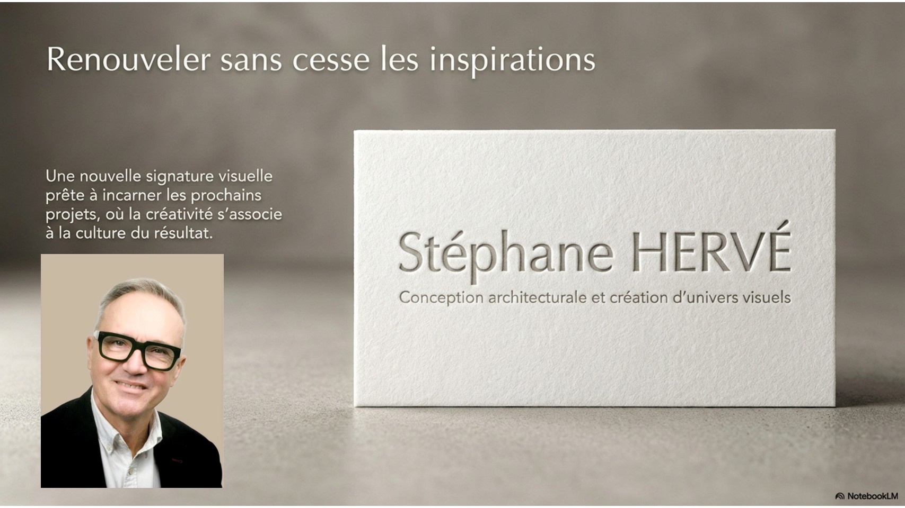

Un professionnel engagé et orienté résultats, je m'appuie sur plus de vingt années d'expérience dans la conception de projets architecturaux, l'aménagement d'espaces professionnels, de vie, de travail et le suivi de chantiers. Ces expériences m'ont permis de développer une expertise globale couvrant l'ensemble du cycle de vie d'un projet, du diagnostic initial à la réception des travaux.
Cette vision transversale nourrit aujourd'hui ma capacité à proposer des solutions pertinentes, innovantes et parfaitement alignées avec les attentes de mes interlocuteurs.
Au cours de ma carrière, j'ai organisé de nombreuses participations aux salons professionnels d'envergure internationale (MAISON&OBJET à VILLEPINTE et CHRISTMASWORLD FRANCFORT), pour lesquels j'ai conçu des univers visuels singuliers pour des stands dimensionnés tout en pilotant l'organisation opérationnelle de dispositifs aux budgets parfois conséquents.
Curieux par nature et profondément créatif, j'aime explorer les matériaux, imaginer de nouveaux concepts et renouveler sans cesse mes inspirations. Cette créativité, associée à une solide culture du résultat et à une forte proximité client, constitue aujourd'hui le socle de ma contribution professionnelle.